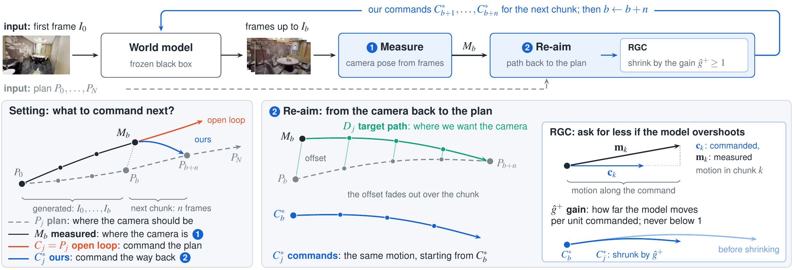
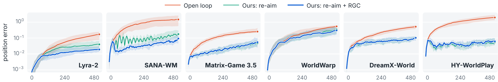

See the difference
Camera control, back on course.
Video world models drift from their planned camera paths. Measuring the generated camera pose and re-aiming the next commands brings them back.
- Planned path
- Open loop
- Re-aim alone
- Re-aim + RGC
- Start
- Frame 480
Examples
Each model starts from the same first frame and follows the same planned camera path. Drag across a frame to compare the released model with ours; the recording at the planned pose is in the corner.
Try the loop on a toy camera
A made-up camera follows a curved plan, generated in chunks of 24 frames. Change how it responds to its commands and compare the three ways of steering it. Dots mark where the camera was measured; thin lines are the paths re-aimed back to the plan.
A toy in the plane, not one of the eight models. Distances are shares of the planned path length.
Mean distance from the plan
Distance from the plan per frame, log scale
Why RGC
Re-aiming asks for exactly the motion that is missing. A model that moves further than told then lands on the other side of the plan, is corrected, and crosses again; the magnifier shows the green path doing this. Above a gain of two the crossings grow and re-aiming alone diverges.
RGC estimates how strongly the model responds and asks for less. Its estimate is never allowed below one, because dividing by a smaller gain would give a model that moves too little ever larger commands. On SANA-WM, the released model that overshoots most, RGC brings the camera path from 5.6 back to 1.5 times the plan length and lowers the error a further 2.5 times.
How it works
The world model stays frozen. We only read the frames it generates and write the camera input it receives. After every chunk, three things happen.
-
Measure
A geometry model estimates where the camera is from the generated frames. Its scale is fixed once, from the first frame, so a camera that moved three times too far still shows up as wrong.
-
Re-aim
A target path starts at the measured camera and rejoins the plan by the end of the next chunk. We send the generator the same motion, written from the pose it believes it is at.
-
Compensate
Some models move further than they are told and would overshoot the corrected path again and again. RGC estimates this response during the rollout and shrinks the commands. It never enlarges them.

Results on eight released models
Mean over 52 DL3DV scenes (480 frames) and 30 RealEstate10K clips (240 frames), measured without aligning the camera path to the plan. Pick a metric.
Show all numbers
WorldScore image aspects were scored for open loop and the full method only. VMem uses feedback through its pose memory instead of re-aiming alone.
Feedback keeps the error low
Run as usual, the camera error grows over the rollout, because every chunk starts from where the model was told to be rather than where it is. With feedback it stays far lower and grows more slowly.

Citation
@inproceedings{anonymous2027lost,
title = {Lost in Generation: Training-Free Re-Aiming for Camera Control
in Autoregressive Video World Models},
author = {Anonymous},
booktitle = {Under review},
year = {2027}
}